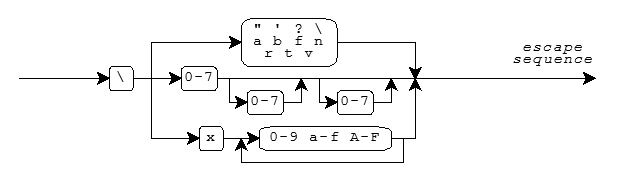

Character Sets · Character Sets and Locales · Escape Sequences · Numeric Escape Sequences · Trigraphs · Multibyte Characters · Wide-Character Encoding
Characters play a central role in Standard C. You represent a C program as one or more source files. The translator reads a source file as a text stream consisting of characters that you can read when you display the stream on a terminal screen or produce hard copy with a printer. You often manipulate text when a C program executes. The program might produce a text stream that people can read, or it might read a text stream entered by someone typing at a keyboard or from a file modified using a text editor. This document describes the characters that you use to write C source files and that you manipulate as streams when executing C programs.
When you write a program, you express C source files as text lines containing characters from the source character set. When a program executes in the target environment, it uses characters from the target character set. These character sets are related, but need not have the same encoding or all the same members.
Every character set contains a distinct code value for each character in the basic C character set. A character set can also contain additional characters with other code values. For example:
'x' becomes the value of
the code for the character corresponding to x in the target
character set."xyz" becomes a sequence of
character constants stored in successive bytes of memory, followed
by a byte containing the value zero:{'x', 'y', 'z', '\0'}A string literal is one way to specify a null-terminated string, an array of zero or more bytes followed by a byte containing the value zero.
Visible graphic characters in the basic C character set:
Form Members
letter A B C D E F G H I J K L M
N O P Q R S T U V W X Y Z
a b c d e f g h i j k l m
n o p q r s t u v w x y z
digit 0 1 2 3 4 5 6 7 8 9
underscore _
punctuation ! " # % & ' ( ) * + , - . / :
; < = > ? [ \ ] ^ { | } ~
Additional graphic characters in the basic C character set:
Character Meaning space leave blank space BEL signal an alert (BELl) BS go back one position (BackSpace) FF go to top of page (Form Feed) NL go to start of next line (NewLine) CR go to start of this line (Carriage Return) HT go to next Horizontal Tab stop VT go to next Vertical Tab stop
The code value zero is reserved for the
null character
which is always in the target character set. Code values for the basic
C character set are positive when stored in an object of type char.
Code values for the digits are contiguous, with increasing value.
For example, '0' + 5 equals '5'.
Code values for any
two letters are not necessarily contiguous.
A locale summarizes conventions particular
to a given culture, such as how to format dates or how to sort names.
The "C" locale is the locale in effect at program startup.
The decimal point in the "C" locale is "."
The implementations support only the "C" locale.
Within character constants and string literals, you can write a variety of escape sequences. Each escape sequence determines the code value for a single character. You use escape sequences to represent character codes:
\n)\t)\a)\0)An escape sequence takes the form shown in the diagram.

Mnemonic escape sequences help you remember the characters they represent:
Character Escape Sequence " \" ' \' ? \? \ \\ BEL \a BS \b FF \f NL \n CR \r HT \t VT \v
You can also write numeric escape sequences using either octal or hexadecimal digits. An octal escape sequence takes one of the forms:
\d or \dd or \ddd
The escape sequence yields a code value that is the numeric
value of the 1-, 2-, or 3-digit octal number following the backslash
(\). Each d can be
any digit in the range 0-7.
A hexadecimal escape sequence takes one of the forms:
\xh or \xhh or ...
The escape sequence yields a code value that is the numeric
value of the arbitrary-length hexadecimal number following the backslash
(\). Each h can be any
decimal digit 0-9, or
any of the letters a-f or A-F.
The letters represent
the digit values 10-15, where either a or A has
the value 10.
A numeric escape sequence terminates with the first character that does not fit the digit pattern. Here are some examples:
'\0'.NL)
within a string literal by writing:"hi\n" which becomes the array
{'h', 'i', '\n', 0}"\3abc" which becomes the array
{3, 'a', 'b', 'c', 0}\xF followed by
the digit 3 by writing
two string literals:"\xF" "3" which becomes the array
{0xF, '3', 0}A trigraph is a sequence of three characters that begins
with two question marks (??). You use trigraphs to write C
source files with a character set that does not contain convenient
graphic representations for some punctuation characters. (The resultant
C source file is not necessarily more readable, but it is unambiguous.)
The list of all defined trigraphs is:
Character Trigraph
[ ??(
\ ??/
] ??)
^ ??'
{ ??<
| ??!
} ??>
~ ??-
# ??=
These are the only trigraphs. The translator does not alter any other sequence that begins with two question marks.
For example, the expression statements:
printf("Case ??=3 is done??/n");
printf("You said what????/n");
are equivalent to:
printf("Case #3 is done\n");
printf("You said what??\n");
The translator replaces each trigraph with its equivalent single character representation in an early phase of translation. You can always treat a trigraph as a single source character.
A source character set or target character set can also contain multibyte characters (sequences of one or more bytes). Each sequence represents a single character in the extended character set. You use multibyte characters to represent large sets of characters, such as Kanji. A multibyte character can be a one-byte sequence that is a character from the basic C character set, an additional one-byte sequence that is implementation defined, or an additional sequence of two or more bytes that is implementation defined.
Any multibyte encoding that contains sequences of two or more bytes depends, for its interpretation between bytes, on a conversion state determined by bytes earlier in the sequence of characters. In the initial conversion state if the byte immediately following matches one of the characters in the basic C character set, the byte must represent that character.
Multibyte characters can also have a state-dependent encoding. How you interpret a byte in such an encoding depends on a conversion state that involves both a parse state, as before, and a shift state, determined by bytes earlier in the sequence of characters. The initial shift state, at the beginning of a new multibyte character, is also the initial conversion state. A subsequent shift sequence can determine an alternate shift state, after which all byte sequences (including one-byte sequences) can have a different interpretation. A byte containing the value zero, however, always represents the null character. It cannot occur as any of the bytes of another multibyte character.
(Amendment 1 adds the type
mbstate_t,
which describes an object that can store a conversion state.
It also relaxes the above rules for
generalized multibyte characters, which describe the encoding
rules for a broad range of
wide streams.)
You can write multibyte characters in C source text as part
of a comment, a character constant, a string literal, or a filename in an
include directive.
How such characters print is implementation
defined. Each sequence of multibyte characters that you write must
begin and end in the initial shift state.
The program can also include multibyte characters in
null-terminated
C strings
used by several library functions, including the
format strings for
printf and
scanf.
Each such character string must begin and end
in the initial shift state.
The implementations support only the UTF-8 encoding as a multibyte encoding. The character set is limited within UCS-2.
Each character in the extended character set also has an integer
representation, called a wide-character encoding.
Each extended character has a unique wide-character value.
The value zero always corresponds to the
null wide character.
The type definition
wchar_t
specifies the integer type that represents wide characters.
You write a
wide-character constant
as L'mbc', where mbc represents
a single multibyte character.
You write a
wide-character string literal as L"mbs",
where mbs represents
a sequence of zero or more multibyte characters.
The wide-character string literal
L"xyz" becomes a sequence of
wide-character constants stored in successive bytes of memory, followed
by a null wide character:
{L'x', L'y', L'z', L'\0'}
The following library functions
help you convert between the multibyte
and wide-character representations of extended characters:
btowc,
mblen,
mbrlen,
mbrtowc,
mbsrtowcs,
mbstowcs,
mbtowc,
wcrtomb,
wcsrtombs,
wcstombs,
wctob, and
wctomb.
The macro
MB_LEN_MAX
specifies the length of the longest possible multibyte sequence required
to represent a single character defined by the implementation across
supported locales. And the macro
MB_CUR_MAX
specifies the length of the longest possible multibyte sequence required
to represent a single character defined for the current
locale.
For example, the
string literal
"hello" becomes an array of six char:
{'h', 'e', 'l', 'l', 'o', 0}
while the wide-character string literal
L"hello" becomes
an array of six integers of type
wchar_t:
{L'h', L'e', L'l', L'l', L'o', 0}
The implementations support only the little-endian UTF-16 encoding as a wide-character encoding. The character set is limited within UCS-2.
See also the Table of Contents and the Index.
© 2012 Sony Computer Entertainment Inc. All rights reserved.
Copyright © 1992-2013 by P.J. Plauger and Jim Brodie. All rights reserved.